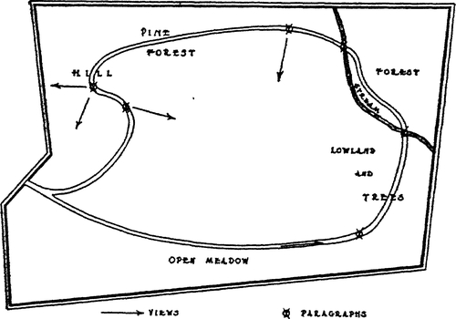

Principles Of Structural Composition. Part 2
Description
This section is from the book "The Natural Style In Landscape Gardening", by Frank A. Waugh. Also available from Amazon: The Natural Style in Landscape Gardening.
Principles Of Structural Composition. Part 2
I hesitate to lay it down as a general rule, but I have a strong feeling that it is good technic to place the entrance somewhere near the lowest level of the park. By this expedient, the visitor will see most of the scenery as he drives the road on an up grade. Photographers and painters know that the picturesque compositions which gather along a roadway are usually seen to best advantage when viewed toward the rising grade. In the strongest pictures the road curves upward, and a composition in wrhieh it takes a downward course is almost always pictorially weak. The visitor, too, on the up grade will drive more slowly and have more time to enjoy the view. Then when he has reached the climax somewhere near the top he can quickly find his way down hill to a convenient exit.
I think there is a psychological reason also for the rule here suggested. There is a feeling of exhilaration and a satisfaction of achievement as one climbs the hill which is quite absent from the down trip. Mountain climbers always get their pay going up. The views coming down are only reminiscences.
It is good technic to present the main theme, or at least to suggest it, in the introduction. The musical composer does this. The architect would consider his entrance badly designed if one could not tell from it whether he was entering a church or a military barracks. If the pine woods are to be the main theme in a park, it would be quite proper to introduce a few pines at the park entrance. Certainly a rose-garden would be artistically unsuitable for the entrance to such a park. If we are planning a riverside park, we ought to have a glimpse of the river from the entrance, or at least some planting or some sculptured setting to suggest the flowing water. If we are designing a cemetery park the quiet and solemn character of the place should be plainly signified at the entrance. I know a certain woodland cemetery which has a truly gorgeous bed of cannas and coleus at the entrance, fit for Monte Carlo or Coney Island.
From the entrance forward the natural park is developed in a sort of panorama. The visitor is led from point to point, where he sees picture after picture, some of pleasing foregrounds filled with flowers, some of quiet masses of trees in middle ground, and some inspiring outlooks to distant landscapes. These points are connected by a suitable path or roadway which forms the true backbone of the garden structure.
These successive pictures, however, should bear a very definite relationship to one another. First of all, each one should present the leading motive in some phase of its development. If we are using the river motive then the river should be visible or distinctly suggested in each fully developed picture.
Furthermore, these successive pictures will occur at definite points or paragraphs. Each section of our drive or walk or trail will be designed to develop some particular phase of the leading motive. Each paragraph then will have its point of culmination, beyond which we pass rapidly to the next paragraph.
These culminating points, paragraphic points, or nodes, will be given further emphasis by special structural methods, particularly by giving to our drive or walk at these points its principal change of direction and its principal change of grade. It follows naturally that any other features of emphasis, such as seats, shelters or special ornamental structures should be placed at paragraphic points. If definite exterior or interior views are to be emphasized, they, too, should be presented from these nodes or paragraphic points.
To summarize: Each paragraph will proceed from its introduction to its culmination consistently developing some phase of the leading motive. At the paragraphic period we would usually find the following features:
1. The clearest expression of the paragraphic episode—the culmination of the particular phase of the leading motive here under development.
2. The principal change in horizontal direction of the roadway.
3. The principal change of grade.
4. The principal features of architectural or ornamental emphasis.
5. The principal change in plantings.
As an illustration we may suppose that the first section of our afternoon drive takes us on a long sweep to the westward with the warm sun in our faces and the wind at the left. We are jogging comfortably along on a practically level road, but with an up grade varying from nothing to two per cent. We are passing across a level meadow land spangled with buttercups and daisies. Here and there at wide intervals stand fine specimens of white oak, representative of the deciduous forest, the leading motive of our composition and the subject of our afternoon's enjoyment. In front of us we see the heavier masses of the woods scattered over rolling hills and making a bold but fluent sky line against the three o'clock sun. A bobolink sings us a snatch of Robert of Lincoln:
Spink, spank, spink, Chee, chee, cheel awakening the music in our hearts, as the sun has already melted the reserve of our city manners and we know that we are in the country and the worries of the morning's business are already half forgotten.
Presently we reach the foot of the hill land. The roadway turns rather sharply to the right to avoid the climb, but nevertheless the gradient is perceptibly increased, varying from two to four per cent. Dobbin slows down to a walk and we pass to paragraph number two. Here the white oaks are still scattered rather than massed (white oaks do not like to be too sociable; they prefer to keep their individuality); but they are close enough together to suggest the forest. As we rise we still get occasional glimpses of the meadow, but our main interest here is in the trees with occasional outcrop-pings of interesting rocks partly covered with trailing masses of sweet briers, and the striking outline of the hill to the north of us which now faces us since we turned.

Continue to:
- prev: Principles Of Structural Composition
- Table of Contents
- next: Principles Of Structural Composition. Part 3